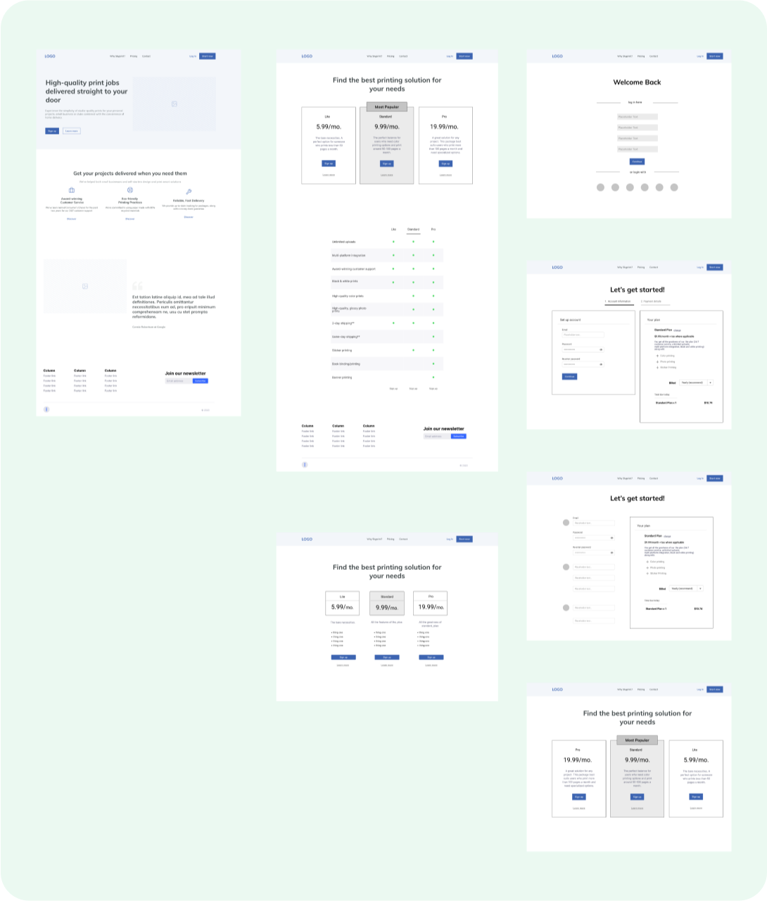

View finished prototype
View finished prototype
Roles:
Deliverables:
Tools:
Task:
You are tasked with designing a signup experience, with a step to purchase one of three different plans, for a Software as a Service (SaaS) product that helps consumers do something. What exactly is that something? It’s up to you! Imagine your SaaS product currently having 1 million active users.
Discovery Phase:
Before beginning the design process, I conducted three qualitative interviews with friends to identify a pain points they’ve experienced with previous sign-up experiences.The main takeaways of these interviews were that:
Competitive Analysis:

User Personas:
I was able to craft a user persona based on the information gathered in my research.
Information Architecture:
I then crafted user stories and userflows were by gathering data from the user survey responses, the competitive analysis and the user personas.
Sketches and Wireframes:
Combining information from my competitive analysis and my user surveys, I was able to outline what I would like my application to look like.
Preference Tests:
I conducted preference tests for different aspects of my application.
Branding and Identity:
Next, I gathered inspiration for the brand identity.
I then created a style guide for the project.
Final Design:
View more
Conclusion:
Overall, my design was able to achieve my original goal to: 1. Clearly display plan options for users 2. Allow users to sign up quickly (less than 3 steps) 3. Show users where they are in the process.
Let's Connect
Please reach out if you want to chat or have any questions!
Message me